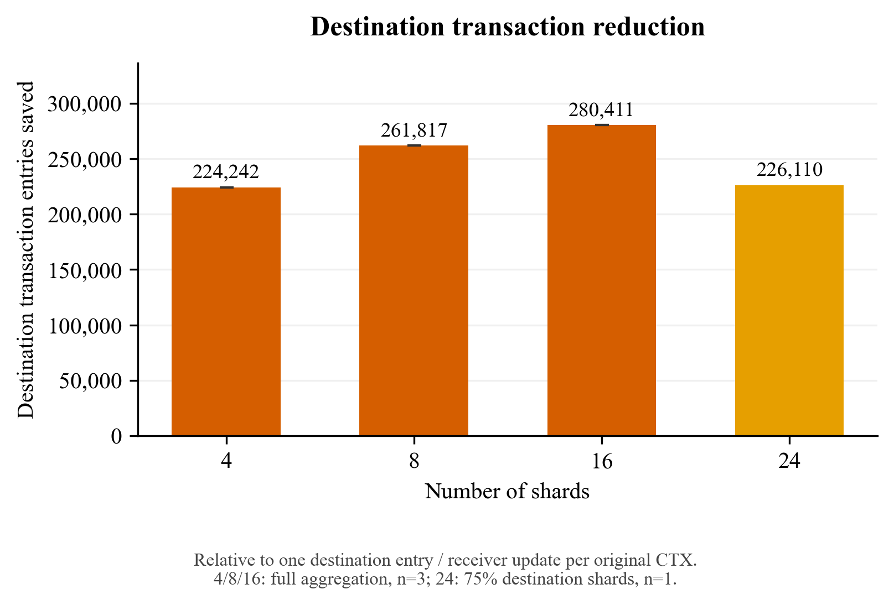
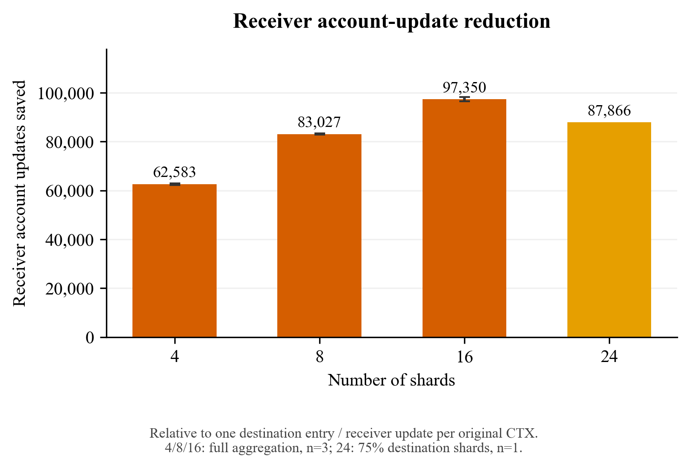
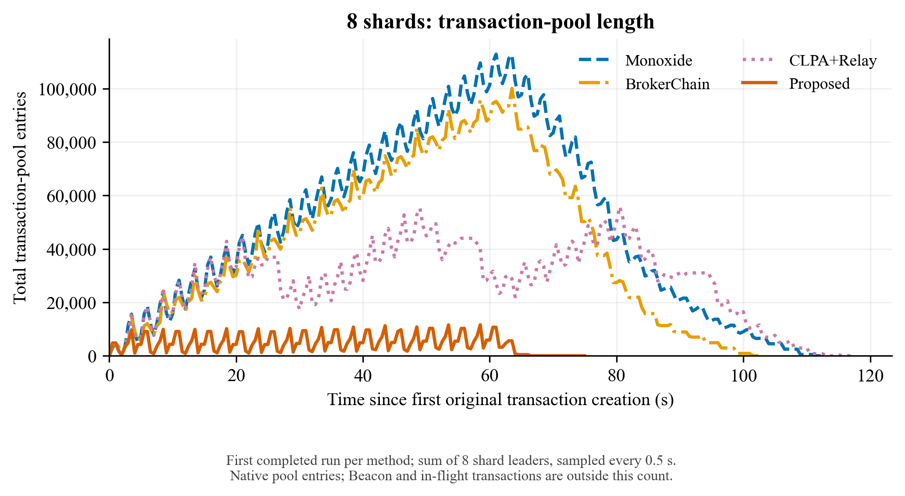
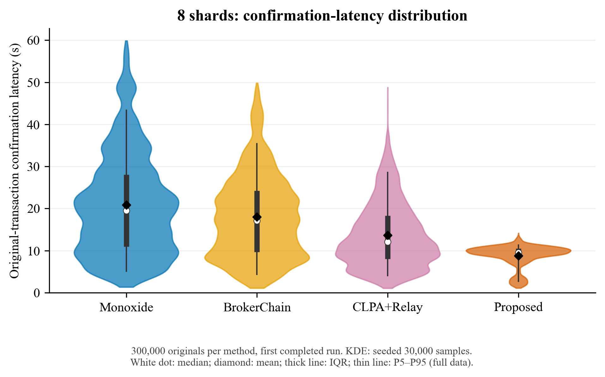
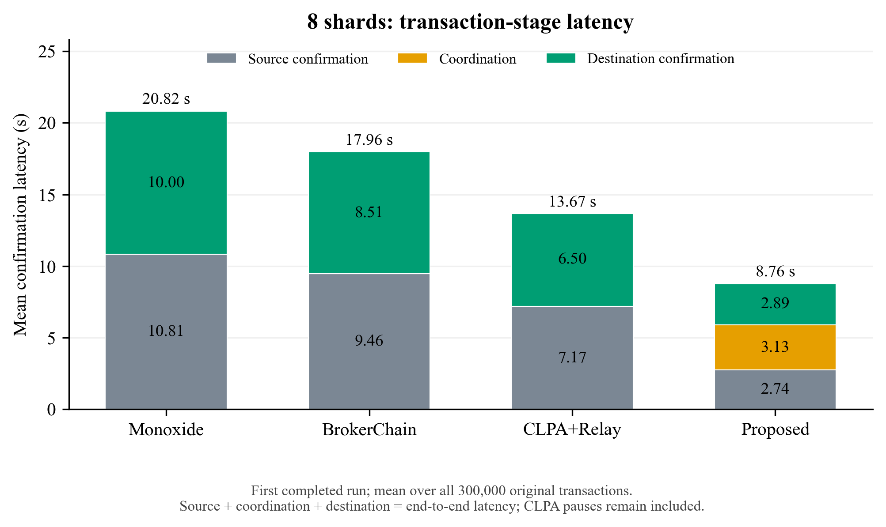
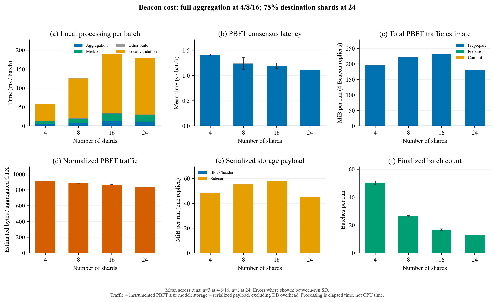
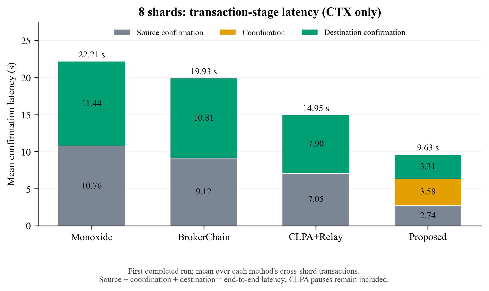

Aggregation diagnostics
4/8/16: full aggregation; 24: 75% destination shards. Combined PDF
01 destination entries saved
PDF · SVG

02 receiver updates saved
PDF · SVG

03 shard8 txpool
PDF · SVG

04 shard8 latency violin
PDF · SVG

05 shard8 stage latency
PDF · SVG

06 beacon cost
PDF · SVG

05b shard8 ctx stage latency
PDF · SVG
